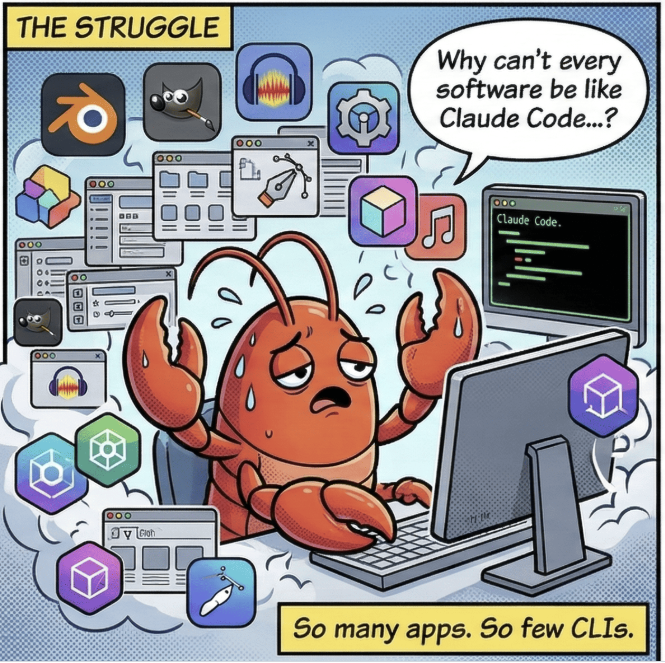
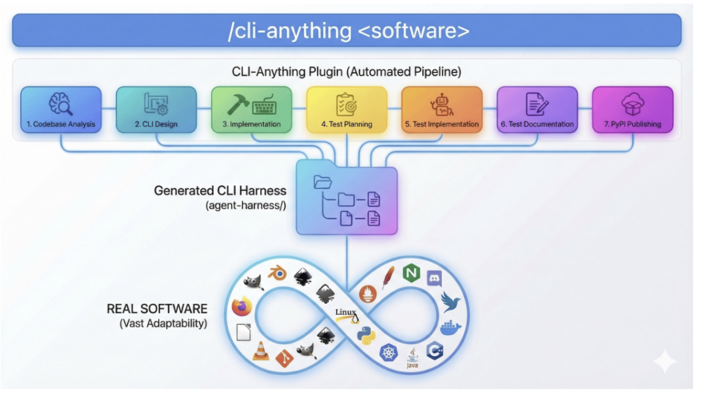
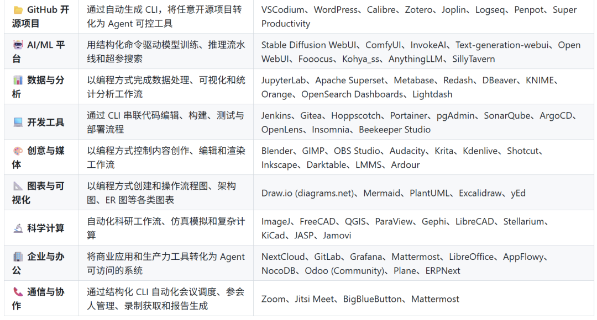
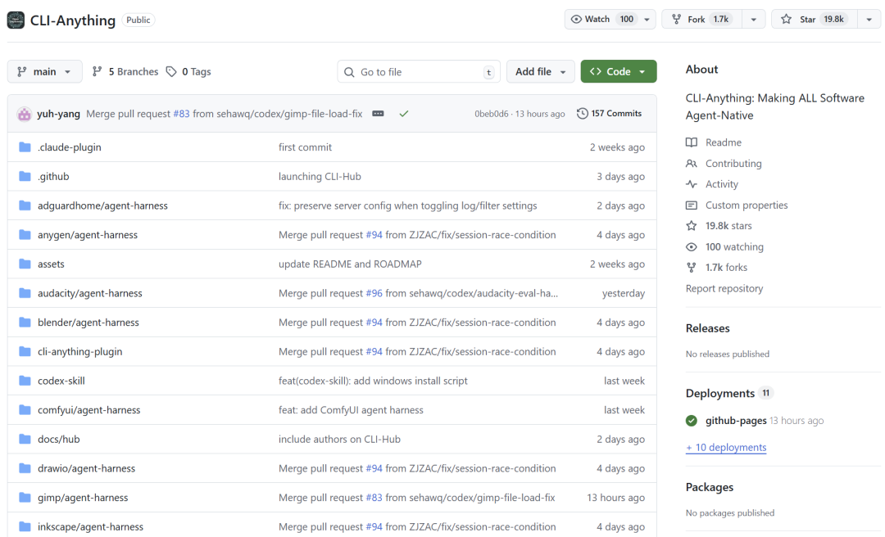
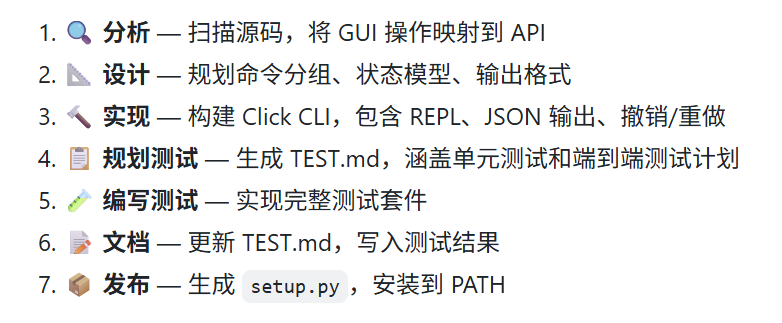
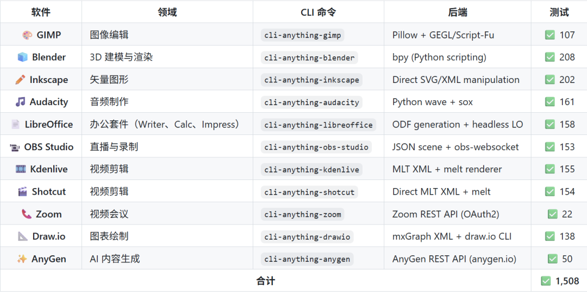

这半年，AI Agent 框架一路狂飙。OpenClaw、nanobot、Cursor、Claude Code 都越来越能干，可真上手做活时，很多人都会撞到同一堵墙: 模型会思考，但能直接调用的工具还是太少。像 GIMP、Blender、LibreOffice 这些真正干活的软件，离 Agent 依然有距离。

我自己就踩过坑。让 AI 帮我在 Blender 里搭个场景，或者在 GIMP 里批量修图，最常见的办法是 UI 自动化加脚本。看着像能跑，实际很脆: 分辨率一变、窗口一闪、焦点一丢，流程就断，最后还是得人接管。
有人会说，那就走 MCP（Model Context Protocol）标准化。方向没问题，但现实很骨感: 大多数成熟软件并没有现成 MCP 接口。让每个项目都单独维护一套 Agent API，不只技术重，还要长期投入，很多团队根本扛不起。
CLI-Anything 的意思很直接: 既然 GUI 难控、API 稀缺，那就把软件能力翻译成命令行。你只要说清楚目标，比如“提高亮度并导出 PNG”，它会把这件事落到可执行的 CLI 上，而不是再去赌一次 UI 自动化。

项目介绍
这个项目最聪明的地方，不是“又造了个 Agent 工具”，而是把问题换了问法: AI 天生擅长文本，那就让软件以文本接口暴露能力。CLI-Anything 号称一条命令就能基于开源代码库生成 CLI，图像软件、3D 软件、办公软件都在它的目标范围里。

它并不要求你重写项目，也不要求先补齐完整 API。只要有源码、能分析到可调用路径，就能把原本藏在 GUI 后面的功能，整理成 Agent 能理解、能组合、能重复执行的命令集合。
开源成就
项目来自香港大学数据科学实验室（HKUDS）黄超教授团队。这个团队此前做过 RAG-Anything、VideoRAG、UrbanGPT，节奏一向很快。CLI-Anything 也是典型“边开源边进化”的路子。
仓库 Star 接近 2 万，Fork 约 1,738。README 的测试徽章显示 1,839 项通过。

另一个动作是他们上线了 CLI-Hub，社区可以集中浏览、搜索、安装已生成 CLI，开发者提 PR 后也更容易被复用。
几个值得说的点
它的流程基本是七步走: 先读源码，把 GUI 行为映射到底层调用；再设计命令结构、状态模型和输出约定；然后用 Click 实现 CLI，补上 REPL 与 JSON 输出；接着生成测试计划、写测试、补文档，最后打包发布。看起来像流水线，但每一步都在解决 Agent 落地时最容易掉链子的地方。

更关键的是，生成的 CLI 不只是“表面封装”。它会直接处理真实文件与真实应用，例如 ODF、MLT XML、SVG 这类格式，再把结果交给对应程序渲染。对人类用户，它能给可读输出；对 Agent，它有 --json。这意味着同一套工具既能手工调试，也能被自动化编排。
$ cli-anything-libreoffice --json document info --project report.json
{
"name": "Q1 Report",
"type": "writer",
"pages": 1,
"elements": 2,
"modified": true
}
那句口号其实点得很准: 「"Today's Software Serves Humans. Tomorrow's Users will be Agents."」 翻成大白话就是，未来的软件不只服务“会点鼠标的人”，还要服务“会下命令的智能体”。
现在它还在快速迭代，但已经有开发者拿它去驱动 GIMP 图像处理、让 Agent 调 Blender 跑渲染。
blender> scene new --name ProductShot
✓ Created scene: ProductShot
blender[ProductShot]> object add-mesh --type cube --location 0 0 1
✓ Added mesh: Cube at (0, 0, 1)
blender[ProductShot]*> render execute --output render.png --engine CYCLES
✓ Rendered: render.png (1920×1080, 2.3 MB) via blender --background
blender[ProductShot]> exit
Goodbye! 👋
官方 Demo 覆盖 16 类应用，至少说明这不是纸面设想，而是一条已经能跑起来的工程路径。它的价值，不在于今天立刻统一所有软件，而在于它把“软件 Agent 化”从概念推进到了可验证、可复制的实践。

安装指南
# 1. 克隆代码
git clone https://github.com/HKUDS/CLI-Anything.git
cd CLI-Anything
# 2. 安装依赖
pip install -e .
# 3. 指定软件路径为软件生成 CLI
cli-anything /path/to/software
也可以作为 Claude Code 插件使用：
/plugin marketplace add HKUDS/CLI-Anything
/plugin install cli-anything
然后直接 /cli-anything ./gimp 就能生成 GIMP 的 CLI。
目前主要支持有源码的开源软件，需要 Python 3.10+ 环境。
写在最后
过去十几年，软件世界从命令行走向图形界面；现在因为 Agent 的出现，又在某种意义上回到 CLI。但这次回归不是倒退，而是多了一层“机器可执行、可协作、可复盘”的新接口。
CLI-Anything 真正抛出的问题是: 当 AI 不再只是聊天窗口里的顾问，而是能直接操作工具的执行者，我们该怎样重新定义软件交互？
这个问题不只属于模型团队，也属于每个做产品、做工程的人。
仓库在这：https://github.com/HKUDS/CLI-Anything
既然看到这了，欢迎随手点赞，再看，转发 , 星标 ，我们下期见 ！